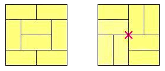

Tatami are rectangular mats, used to completely cover the floor of a room, without overlap.
Assuming that the only type of available tatami has dimensions $1 \times 2$, there are obviously some limitations for the shape and size of the rooms that can be covered.
For this problem, we consider only rectangular rooms with integer dimensions $a, b$ and even size $s = a \cdot b$.
We use the term 'size' to denote the floor surface area of the room, and — without loss of generality — we add the condition $a \le b$.
There is one rule to follow when laying out tatami: there must be no points where corners of four different mats meet.
For example, consider the two arrangements below for a $4 \times 4$ room:

The arrangement on the left is acceptable, whereas the one on the right is not: a red "X" in the middle, marks the point where four tatami meet.
Because of this rule, certain even-sized rooms cannot be covered with tatami: we call them tatami-free rooms.
Further, we define $T(s)$ as the number of tatami-free rooms of size $s$.
The smallest tatami-free room has size $s = 70$ and dimensions $7 \times 10$.
All the other rooms of size $s = 70$ can be covered with tatami; they are: $1 \times 70$, $2 \times 35$ and $5 \times 14$.
Hence, $T(70) = 1$.
Similarly, we can verify that $T(1320) = 5$ because there are exactly $5$ tatami-free rooms of size $s = 1320$:
$20 \times 66$, $22 \times 60$, $24 \times 55$, $30 \times 44$ and $33 \times 40$.
In fact, $s = 1320$ is the smallest room-size $s$ for which $T(s) = 5$.
Find the smallest room-size $s$ for which $T(s) = 200$.
solve(target_T=1) → ?solve(target_T=200) → ?solve(target_T=5) → ?